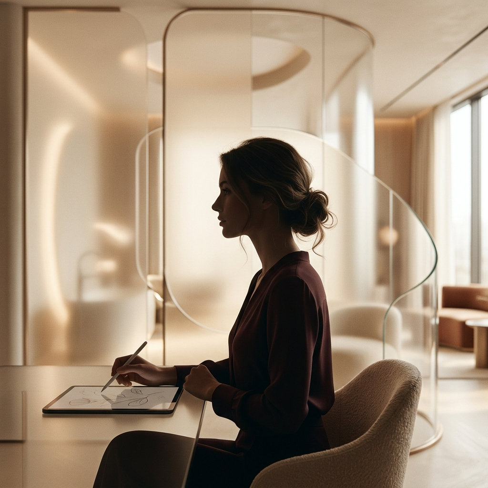

Dove ogni linea trova la sua curva.
Il mio lavoro non è solo progettazione, ma una continua ricerca di armonia sensoriale. Credo in un design che non aggredisce lo spazio, ma lo abbraccia con dolcezza, eliminando le rigidità visive per creare ambienti che curano l'anima.
Progettiamo per raccordare, mai per dividere. La forma organica è l'essenza stessa della nostra accoglienza.
Equilibrio cromatico e materico che trasforma ogni stanza in un ecosistema rigenerante.
Uno spazio senza emozione è solo volume. Noi progettiamo il battito degli ambienti.
Maria Carmela Sposato è una designer di interni e di prodotto con una visione profondamente legata alla fluidità delle forme. Dopo anni di esperienza tra installazioni per grandi brand e progetti residenziali esclusivi, ha fondato *tundi* per dare un nome locale a un desiderio globale: il bisogno di morbidezza.
Nessuno spigolo, solo creatività. Questo non è solo un motto, ma la regola che guida ogni sua matita sul foglio, ogni volume nello spazio, ogni materiale scelto.